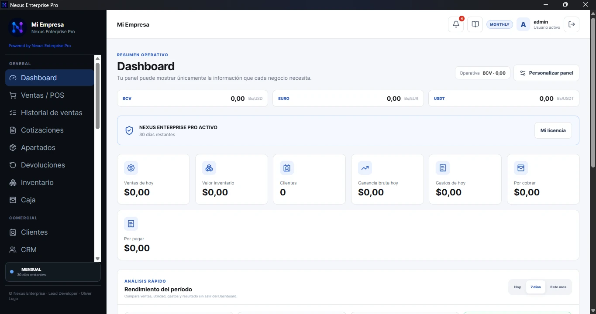
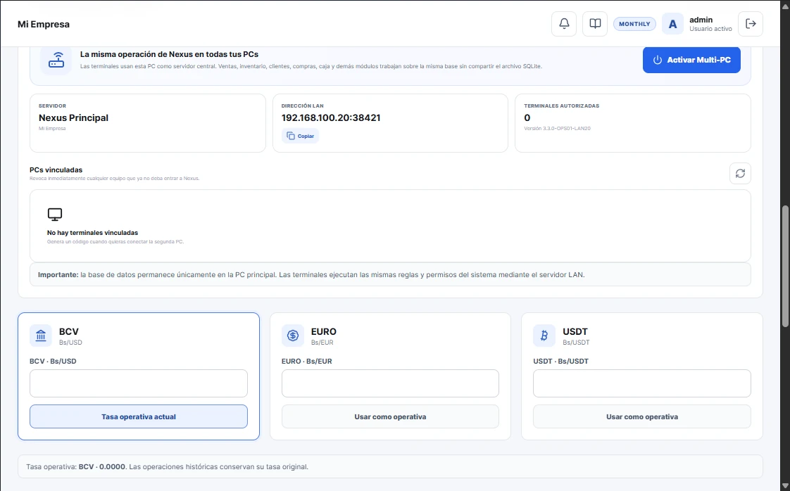

Ventas / POS
Venta rápida, pagos, crédito, descuentos, envío y edición controlada.
Una plataforma de escritorio para conectar ventas, inventario, caja, clientes, proveedores, compras, cuentas, reportes y operación Multi‑PC.
El panel puede adaptarse a lo que cada negocio necesita ver: tasas, ventas, inventario, clientes, caja y rendimiento.

Venta rápida, pagos, crédito, descuentos, envío y edición controlada.
Stock, costos, variantes, imágenes, proveedores y filtros.
Producción, medios, monedas, movimientos, arqueo y cierre.
Fichas, historial, seguimiento, postventa y cuentas.
Principal + Terminal por LAN con la misma operación.
Ventas, costos, utilidad, gastos, períodos y análisis.

Nexus Enterprise Terminal permite trabajar desde PCs secundarias manteniendo la base central en el equipo principal y respetando usuarios, roles y reglas.